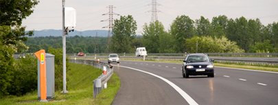
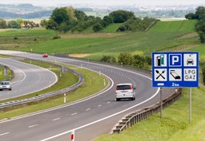

Bilety rabatowe
Kilka słów o nas
 Stalexport Autostrada Małopolska S.A. ul. Piaskowa 20, 41-404 Mysłowice tel. 032 76 27 555, fax 032 76 27 556
sąd rejestrowy: Sąd Rejonowy w Katowicach,
Wydział VIII Gospodarczy - Krajowy Rejestr Sądowy
KRS 26895 NIP 634 22 62 054 Regon: 273796214
Kapitał zakładowy: 29.553.000 zł wpłacony w całości
Koncesjonariusz płatnego odcinka autostrady A4. Firma powstała w roku 1998 r. jako Podmiot Specjalnego Przeznaczenia, powołany przez ówczesnego koncesjonariusza autostrady – firmę Stalexport S.A. z jej 100% udziałem w kapitałem akcyjnym.
Celem SAM S.A. jest realizacja obowiązków nałożonych na koncesjonariusza, a także praw wynikających z Umowy Koncesyjnej.
Jego zadaniem jest zarządzanie Autostradą Małopolską jako przedsięwzięciem gospodarczym, czyli:
- pozyskiwanie długoterminowego finansowania dla następnych faz realizowanej inwestycji na zasadzie samofinansowania się projektu
- używanie i pobieranie pożytków z nieruchomości wchodzących w skład Pasa Drogowego Autostrady
- prowadzenie robót budowlanych
- eksploatacja autostrady
W 2003 r. zmiany do Ustawy o autostradach płatnych pozwoliły na zapewnienie bezpieczeństwa prawnego instytucjom finansowym zainteresowanym kredytowaniem projektu tj. przede wszystkim umożliwienie przeniesienia koncesji na podmiot specjalnego przeznaczenia oraz zapewnienie ciągłości koncesji w przypadku zmiany koncesjonariusza.
28 lipca 2004 r. koncesja przeniesiona została na SAM S.A., a 17 października 2005 r. podpisano nową Umowę Koncesyjną.
W grudniu 2005 zawarto z konsorcjum banków: Westdeutsche Landesbank, DePfa Group, Kreditanstalt fur Wiederaufbau , BPH S.A. Umowę Kredytową na kwotę do 380 mln zł, umożliwiającą realizację ogromu zadań w zakresie inwestycji remontowo-budowlanych, nałożonych na koncesjonariusza przez państwo.
Realizowany przez SAM S.A. projekt, w odróżnieniu od innych koncesji autostradowych nie obciąża Skarbu Państwa żadnymi gwarancjami.
Jego zadaniem jest zarządzanie Autostradą Małopolską jako przedsięwzięciem gospodarczym, czyli:
- pozyskiwanie długoterminowego finansowania dla następnych faz realizowanej inwestycji na zasadzie samofinansowania się projektu
- używanie i pobieranie pożytków z nieruchomości wchodzących w skład Pasa Drogowego Autostrady
- prowadzenie robót budowlanych
- eksploatacja autostrady
Zarząd
Wojciech Gębicki - Prezes Zarządu Stalexport Autostrada Małopolska S.A. Urodzony w 1965 r.
Absolwent Szkoły Głównej Handlowej w Warszawie. Zdobył także z wyróżnieniem dyplom MBA prestiżowej francuskiej szkoły biznesu INSEAD. Funkcję Prezesa Stalexport Autostrada Małopolska S.A. łączy ze stanowiskiem wiceprezesa spółki matki grupy kapitałowej - Stalexport Autostrady S.A.
Przed związaniem się z Grupą Stalexport Autostrady przez wiele lat związany był z branżą autostradową. Zajmował się m.in. pozyskiwaniem finansowania dla dużych projektów infrastrukturalnych w Europie Środkowo-Wschodniej.
W latach dziewięćdziesiątych pracował w Londynie w Europejskim Banku
Wojciech Gębicki - Prezes Zarządu Stalexport Autostrada Małopolska S.A. Urodzony w 1965 r.
Absolwent Szkoły Głównej Handlowej w Warszawie. Zdobył także z wyróżnieniem dyplom MBA prestiżowej francuskiej szkoły biznesu INSEAD. Funkcję Prezesa Stalexport Autostrada Małopolska S.A. łączy ze stanowiskiem wiceprezesa spółki matki grupy kapitałowej - Stalexport Autostrady S.A.
Przed związaniem się z Grupą Stalexport Autostrady przez wiele lat związany był z branżą autostradową. Zajmował się m.in. pozyskiwaniem finansowania dla dużych projektów infrastrukturalnych w Europie Środkowo-Wschodniej.
W latach dziewięćdziesiątych pracował w Londynie w Europejskim Banku Odbudowy i Rozwoju, West Merchant Bank oraz Credit Lyonnais. Natomiast w latach 1999-2001 był wiceprezesem Zarządu Autostrady Wielkopolskiej S.A., gdzie negocjował warte około miliard euro zamknięcie finansowe pierwszego odcinka autostrady płatnej A2. Projekt realizowany był przy szerokim udziale Europejskiego Banku Inwestycyjnego i konsorcjum międzynarodowych banków komercyjnych.
Tabela
| Header #1 | Header #2 | Header #3 | Header #4 | Header #5 | Header #6 | Header #7 |
|---|---|---|---|---|---|---|
| Biurowy | 5 | 47,6 | 2295901005004138 | 55 | 15.51.55-90.12 | 170x16x4854 |
| Biurowy | 5 | 47,6 | 2295901005004138 | 55 | 15.51.55-90.12 | 170x16x4854 |
| Biurowy | 5 | 47,6 | 2295901005004138 | 55 | 15.51.55-90.12 | 170x16x4854 |